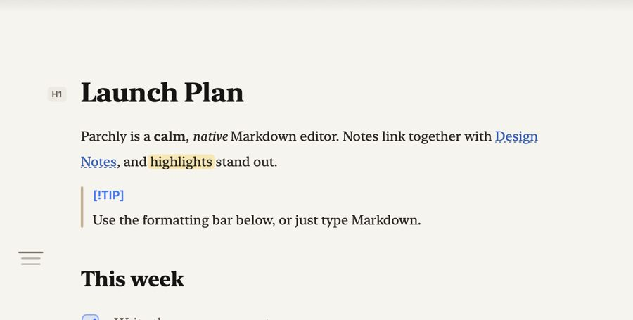

Markdown that reads like a page.
Parchly is a free, native Markdown editor for Mac. Write in a calm document view or use the formatting bar, and every .md file stays plain text on disk.
curl -fsSL https://tapariapurv.github.io/parchly/install.sh | bashFree & open source · macOS 14+ · Apple silicon & Intel · Updates itself

Type Markdown.
Read a page.
Syntax stays visible only on the line you're writing. Move on, and the markers fade away so the line reads like a finished page. The file on disk stays plain Markdown.
No syntax required
Don't know Markdown? The floating formatting bar has a button for everything, and every button has a shortcut to learn when you're ready.
Everything Markdown, nothing in the way
No library, no database, no account. Parchly opens .md files and writes them straight back.
Edit in place
Headings, bold, links, code, tables and checkboxes render as you type. Syntax shows only on the current line.
Lists that keep up
Return continues bullets, numbers and tasks. Tab nests an item, and numbered lists renumber themselves.
Real tables
Pipe tables show as a grid. Tab moves between cells and tidies the source, and Return adds a row.
Linked notes
[[Note]], [[Note#Heading]] and #anchor links. ⌘-click to follow, or to create a note that doesn't exist yet.
Math & diagrams
KaTeX math, Mermaid diagrams and colour-coded code in the live preview, all bundled and offline.
Quick Look
Press Space on any .md file in Finder to see it rendered without opening an app.
Find anything
⌘P finds every Markdown file in the folder. ⇧⌘O jumps to any heading.
A proper Mac app
Autosave, Versions, tabs, Find & Replace, export to PDF/HTML, Liquid Glass, and automatic updates.
Nine themes, one calm page
Paper follows your Mac's appearance, light by day and warm dark at night. Or pick a palette in Settings (⌘,). Try them here:

Document, Source and Preview
⌃⌘1 Document · ⌃⌘2 Source with optional line numbers · ⌘\ live side-by-side preview.
Every Markdown you write
CommonMark and GitHub Flavored Markdown, plus the extensions people actually use.
| Element | Editor | Preview & export | Quick Look |
|---|---|---|---|
| Headings (ATX & setext), paragraphs, emphasis, strong, links, images | ✓ | ✓ | ✓ |
| Lists, nested lists, task lists | ✓ | ✓ | ✓ |
| Tables with alignment | ✓ | ✓ | ✓ |
| Code spans & fenced code with syntax colouring | ✓ | ✓ | ✓ |
Blockquotes & GitHub alerts ([!NOTE], [!WARNING]…) | ✓ | ✓ | ✓ |
| Strikethrough, autolinks, footnotes, raw HTML, YAML front matter | ✓ | ✓ | ✓ |
==highlight==, :emoji:, heading anchors | ✓ | ✓ | ✓ |
[[Wiki links]] & cross-references | ✓ | ✓ | ✓ |
Math $…$ / $$…$$ (KaTeX) | ✓ | ✓ | source |
| Mermaid diagrams | ✓ | ✓ | source |
Press Space in Finder
Parchly's Quick Look extension renders any .md file, with tables, task lists, code and alerts, the moment you press Space. It uses the same renderer as the app.

Install in under a minute
Parchly needs macOS 14 Sonoma or later, on Apple silicon or Intel.
Paste one line into Terminal
Open Terminal (⌘Space, type “Terminal”), paste the command below and press Return. It downloads the latest release, installs it into Applications, turns on Quick Look and opens Parchly.
curl -fsSL https://tapariapurv.github.io/parchly/install.sh | bashOr use the disk image
Download Parchly.dmg, open it and drag Parchly onto Applications. The app isn't notarized by Apple yet, so the first time you open it, go to System Settings › Privacy & Security and click Open Anyway. You only do this once.
Make it your Markdown app
Select any .md file in Finder, choose Get Info, set Open with to Parchly and click Change All. If another app previews Markdown, choose Parchly under System Settings › General › Login Items & Extensions › Quick Look.
That's it. Updates are automatic
Parchly checks for updates daily and installs them in the background. You can change this, or check now, in Settings › Updates. To uninstall, drag Parchly to the Trash.
Keyboard first
Every command is in the menu bar, and Help search (⇧⌘/) works as a command palette.
| Action | Keys | Action | Keys |
|---|---|---|---|
| Bold · Italic · Strike | ⌘B ⌘I ⇧⌘X | Heading 1–6 · Body | ⌘1–⌘6 ⌘0 |
| Inline code · Link | ⌃` ⌘K | Bullets · Numbers · Tasks | ⇧⌘8 ⇧⌘7 ⇧⌘9 |
| Tick a task | ⌘L | Quote · Code block · Table | ⌥⌘Q ⌥⌘C ⌥⌘T |
| Indent · Outdent | ⌘] ⌘[ | Move line · Duplicate | ⌃⌘↑↓ ⇧⌘D |
| Document · Source · Preview | ⌃⌘1 ⌃⌘2 ⌘\ | Go to file · heading | ⌘P ⇧⌘O |
| Formatting bar | ⇧⌘B | Settings | ⌘, |
Questions
Is Parchly really free?
Yes. Parchly is free and open source (MIT). There's no account, subscription, tracking or data collection. See the privacy policy.
Do I need to know Markdown?
No. The formatting bar and the Format menu do everything for you. Parchly also opens a short guide the first time you launch it (Help › Markdown Guide).
Where are my notes stored?
Wherever you save them: ordinary .md files in any folder, including iCloud Drive or Dropbox. Parchly has no database, so other apps can open the same files.
Can I link notes together?
Yes. Type [[Another Note]] to link to a note in the same folder, or [[Another Note#Heading]] to link to a section. ⌘-click a link to follow it. If the note doesn't exist, Parchly creates it.
Does it support math, diagrams and GitHub Markdown?
Yes: GitHub Flavored Markdown (tables, task lists, footnotes, strikethrough, autolinks, alerts), plus KaTeX math and Mermaid diagrams in the preview. See the support table.
How do I update Parchly?
You don't need to: it updates itself. To check right away, choose Parchly › Check for Updates.